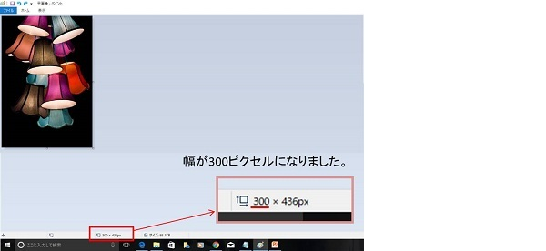

| kindleで本の出版やってみよう！: 無料で本を出版する方法を大公開！ | |
| 星野 希 | |
| (2017) | |
kindleで本の出版やってみよう！
星野 希
はじめに
この本は、実際に私が本を出版した際の体験をもとに、初心者向けに内容を絞って解説したものです。
本の出版は一般的には敷居が高いと思われがちですが、いろいろなフリーソフト、フリー素材などを駆使することで、kindleでの出版が可能なんです。
電子書籍の作成やHTMLなどの知識がゼロの方でも、パソコンを使える環境があり、タイピングができれば本は出版できます。
実際に私もつい最近まで本を書いたことも、出版したこともありませんでした。
順を追って理解して頂ければ、確実に本の出版は可能です。
それでは始めてみましょう。
kindleで出版する流れ
①
出版したい内容をまとめて、文章を完成させます
↓
②
文章の間に挿入したい画像やイラストを準備します
↓
③
本のタイトルと著者名を決めます
↓
④
表紙を作成します
↓
⑤
電子書籍用にテキストを加工します
↓
⑥
でんでんコンバーターを使います
↓
⑦
Amazon と kindleに登録します
↓
⑧
本を出版します
実践してみよう
① 出版したい内容をまとめて、文章を完成させます
その際、Windows のパソコンに入っている「メモ帳」が使いやすいです。
メモ帳で文章を作成し、保存時にはテキスト文書(.txt)、文字コードUTF-8を選択します。
メモ帳を使う以外に、Microsoft Word(Windousで標準で使用できるソフト)、Googleドキュメント(フリーソフト) でも構いません.
その際は文章を作って保存の際に、Microsoft Word では書式なしテキスト(.txt)を選択して保存します。
Googleドキュメント では書式なしテキスト(.txt)でダウンロードして保存します。
そうすると、メモ帳で作成したのと同様の形式で保存することができます。
② 文章の間に挿入したい画像やイラストを準備します
画像やイラストは著作権法に引っかからないようにするために、自分で撮った画像や著作権フリーの画像を使用します。
著作権フリーの画像は、タダピク など無料のものもありますのでぜひ活用してみてください。
インターネットで他の人が使用している画像をコピーして使用することは違法になるので、注意しましょうね。
タダピク は、人物や景色、建物など、たくさんの画像から検索できますので、ぜひ活用してみてください。
タダピク http://www.tadapic.com/
画像はｊｐeｇ(jpg)形式が望ましいです。
文章の間に画像を挿入するときは、Ｗ600×Ｈ800ピクセルが最大となります。
これ以下のサイズでは表示される画像が小さくなります。
これ以上のサイズの画像を使用しても、画像の大きさは変わりません。
画像サイズが大きいほど画像が鮮明になりますが、データ容量が大きくなるとダウンロードに時間がかかり読み辛くなることがあります。
また、画像のファイルサイズが大きいとダウンロード手数料も多く引かれますので、注意しましょう。
画像サイズの調整
水平方向(Ｗ)が600ピクセルになるように調整します。
準備した画像のサイズを確認したいときは、保存した画像ファイルにカーソルを合わせるとピクセルが表示されます。
もし表示されないときは、ペイント を使用します。
ペイント はWindowsに標準装備のお絵描き用アプリケーションです。
ペイントを開いたら、画面の下部でサイズが確認できます。うまく表示されないときは、ペイントの画面を最大化して表示してみてください。そうすると画面の下にピクセルサイズが表示されます。
画像サイズがＷ600×Ｈ800ピクセル以上になっているときは、サイズ変更をします。
ペイントによる画像サイズ変更方法
1）画像ファイルを右クリックし、プログラムから開く→ペイント をクリック。
2)ペイント画面上部のホーム→サイズ変更をクリック。
3)サイズ変更の単位の部分をパーセントからピクセルに変更。
4)縦横比を維持するにチェックが入る。
5)水平方向の欄に「600」と入力。※垂直方向は適当な数値に変更されます。
6)下段の「ＯＫ」をクリックし、上書き保存をして完成です。
水平方向(Ｗ）が600ピクセルとなるようにすることで、幅がkindleの画面いっぱいに画像が表示される設定ができます。
画面いっぱいの大きさで画像を表示したくないとき
まず最大がＷ600ピクセルということを念頭に置き、kindleで画面の半分くらいまでの幅で画像を表示したいときは、単純にＷ300ピクセル(Ｗ600ピクセルの半分＝300ピクセル)にします。
ペイント→ホーム→サイズ変更で、ピクセルにチェック。水平方向の欄に「300」と入力します。そうすると、元画像が300より大きかったときは、画像が小さくなって表示されます。

このまま画像を使用してしまうと、不鮮明な画像が引き延ばされてkindleで表示されてしまいます。
なのでここでは、画像のすぐ周りの白い部分をＷ600ピクセルまで伸ばします。白い小さな四角にカーソルを合わせると、サイズ調整のための「⇔
」が出てきます。そこで左クリックをしたまま右方向へ引っ張ると、白い部分の幅が大きくなります。
600ピクセルまでのびたかどうかは、ペイント画面の一番下のピクセル表示を見て確認しながら、ちょうどよいところで手を放して止めてください。
高さは、画像の高さそのままで問題ありません。
画像の下側にも白い部分があるときは、幅調整の時同様、下側の白い小さな四角にカーソルを合わせてサイズ調整のための「⇔
」を出し、白い部分がなくなるように（画像の高さのみになるように）調整してください。
※さらに小さく表示したいとき、画面の1/3の幅にしたいならＷ200ピクセル(Ｗ600ピクセルの1/3＝200ピクセル)など、お好みによってサイズは変更してください。
画像保存時のファイル名
ファイル名は、アルファベットか数字でしたら使用できるのですが、ここでは文章に登場させたい順番に、1 、2 、3 ... としましょう。この方法が後々管理しやすいと思います。
文章の中で一番最初に登場させる画像は、1 というファイル名にして、jpeg(jpg)形式で保存です。
2つめは 2 というファイル名、 3つめは 3 というファイル名です。画像を使用する数だけ番号を使います。
③ 本のタイトルと著者名を決めます
本のタイトルは非常に重要です。
売れるかどうかは、タイトルと表紙で決まるといっても過言ではありません。
読者の目に留まるような、魅力的なタイトルを考えましょう。
著者名は本名でもいいですし、ペンネームでも構いません。
④ 表紙を作成します
表紙は、タイトルと同じくらい重要です。
表紙は、文字だけで作成することも可能ですが、画像やイラストも入れた方がインパクトのある表紙になります。
このときの画像は、自分で撮った写真もしくは著作権フリーの画像を使用します。
表紙のレイアウトは、実際に出版されている電子書籍を参考にします。
例えば、amazon のランキングで kindle本の売れ筋ランキング が載っていますのでここで上位の本などを参考にします。
画像の作り方
表紙サイズは、1600×2560 ピクセルが理想的です。
表紙にはいくつかの方法がありますが、表紙のサンプルを作成したので見てみましょう。
表紙には画面いっぱいの写真を使用し、タイトルと著者名を目立たせるように貼り付けます。
方法は、「画像サイズの調整」ページでも先ほど説明したのと同様、ペイント を使用します。
使いたい画像を用意したら、ペイント で開きます。
この画像は先ほど文章中に挿入の例で説明したのと同じものですが、ピクセルと縦横比を変えて使用します。
ホーム→サイズ変更→ピクセルにチェック→水平方向に「1600」を入力→下段の「ＯＫ」をクリックします。
垂直方向は自動入力で適当な数値に変更されますが、「2560」になったら一番理想的です。
ほとんどの場合は2560ピクセルより小さくなると思います。
ここで、画像が大きくなりすぎて作業しづらいときは、ペイント画面の右下にズーム機能がありますので、50％
とか25％
とか小さいサイズの見え方にして作業してください。
先ほど同様、下側の白い四角にカーソルを合わせ、高さが2560ピクセルになるまで引き延ばします。
白い部分は、写真に近い色に変えたり他の色をつけたりして、見栄えを考えながら自由に変更します。
ここでは、白い部分を写真の背景と同じ黒に変えて進めていきます。
ペイント のホーム→ツールバーの中の「塗りつぶし（ペンキの缶のマーク)をクリック→色の中の黒の部分をクリック→黒にしたい部分をクリック
このようにすると、下側の白い部分が黒になります。
表紙データができたら、cover というファイル名にして、jpeg形式で保存します。
タイトルや著者名などの入力
そのまま文字を貼り付けることもできますが、タイトル部分を背景の画像の上にそのまま貼り付けると、画像と重なって見えにくくなります。
これを改善するために、背景とタイトル文字の間に無地の四角を挿入し、文字を読みやすくします。
一方著者名の部分は、明るい色の文字を黒い背景部分に貼り付ければ十分見やすくなります。
まず無地の四角を作ります。
ホーム→図形→四角を選びます。
そのままもう一度、 ホーム→図形 の 塗りつぶし→単色をクリックします。
画像の上で四角を配置したい箇所の左上をクリックし、右下の適切な位置までドラッグします。
ホーム→色→塗りつぶしたい色をクリックします。今回は黄緑をクリックします。
ホーム→ツール→塗りつぶし(ペンキ缶のアイコン）をクリック→画像の塗りつぶしたい部分をクリック
これで、四角い部分が黄緑色になりました。
次に文字を配置します。
ホーム→ツール の テキスト(Ａのアイコン）をクリック
画像のどこか1箇所を触ると、画像の上に文字入力用の四角い点線が出てきて、上部にテキストツールが出てきます。
テキスト→書体を選び(サンプルは小塚明朝Ｐro L)、フォントサイズを選び(サンプルはフォント100）、文字を太くします（Ｂのアイコン）
色の部分で黒をクリックします。
黄緑色の背景の上に黒の文字を配置すると、文字が目立って見やすくなります。
ここではタイトル文字は黒に、著者名のところは文字を黄緑にします。
⑤ 電子書籍用にテキストを加工します
たくさんのルールがありますが、ここでは詳細のルールは省いて代表的なものを紹介します。
1)文章の段落を分けたいときは、1行開けるとよいです。
ＯＯＯ。
ＯＯＯ。
2)見出しを付けたい部分の前と後ろにシャープを配置して囲みます。
# 見出しレベル１ #
## 見出しレベル２ ##
### 見出しレベル３ ###
#### 見出しレベル４ ####
##### 見出しレベル５ #####
###### 見出しレベル６ ######
シャープの数で重要度が変わります。シャープの数が少ないほど重要度が高くなります。
3)=を3つ以上配置すると、文章を区切ることができます。
===
4)画像を入れるときは、フォルダに1つづつ画像を保存します。その際、数字で1,2,3などにすると管理しやすく、次に使う でんでんコンバーター でも読み込んでくれます。
例えば、保存時の画像が 1 というファイル名でjpegの場合
 と表示します。 ※ビックリマークの後ろは角かっこ
と表示します。 ※ビックリマークの後ろは角かっこ
以上の表記を含みながら、テキストを完成させます。
完成したテキストは、my.text など、アルファベッドでファイル名をつけて保存します。
⑥ でんでんコンバーターを使います
でんでんコンバーターはアップロードされたテキスト等を電子書籍の標準フォーマットEPUB 3に変換して出力するウェブサービスです。
https://conv.denshochan.com/
アップロード前の準備として、作成したテキストデータ(.txt)、表紙画像(.jpg)、挿入画像(.jpg)を一つのフォルダの中に入れます。
準備ができたら でんでんコンバータ を開きます。
1)「アップロードしてね」の部分でファイル選択をクリック、さきほど作ったフォルダ内の全てのファイルを選択します。
複数ファイルを選択するときは、ShiftキーやCtrlキーを押しながら選択できます。
2)「情報を入れてね」のところは、タイトルと著者名を入力します。
3)ページ送り方向はこの本のように横書きの場合は、「左から右」を選択します。
4)「お好みでどうぞ」部分は、扉ページと目次ページにチェックを入れます。
5)「その他」部分、表紙を作成した場合は、「表紙ページをスキップする」 のチェックを外します。
「自動縦中横を有効にする」欄は、チェックが入ったままで構いません。
その他はチェックを外したままでもOKです。
6)ここまでできたら、下部の「作成したEPUBをプレビュー」するにチェックを入れて、「変換」をクリックします。
7)プレビュー画面が開きますので、仕上がりを確認して下さい。
8)同時に、EPUBデータがダウンロードされているので、PCのダウンロードページなどで、データがダウンロードされているかを確認します。
ダウンロードされたデータは、次のkindleで登録時に使う大事なデータですので、先ほどの同じフォルダなどに移動して管理しましょう。
⑥ Amazon と kindleに登録します
まず、Amazon のアカウントから開設して下さい。※アカウントをお持ちの方は次のステップへ
https://www.amazon.co.jp/
上記URLへアクセスしてアカウントを開設してください。
次に、Amazon kindle publishing に登録です。
https://kdp.amazon.co.jp/ja_JP
上記URLへアクセスして、必要事項を入力してアカウント登録をしてください。
本が売れた時の収入の振込先の口座などもきちんと登録しておきましょう。
kindleからの収入の振込は、翌々月の振込となります。
⑦ 本を出版します
Amazon kindle publishing で 新しい本を作成 をクリックします
必要事項を入力します。
入力項目は大きく分けて3つあります。「Kindle 本の詳細」、「Kindle 本のコンテンツ」、「Kindle 本の価格設定」です。
先ほど作ったデータをアップロードするのは、「Kindle 本のコンテンツ」内です。
Kindle本のコンテンツ→原稿→電子書籍の原稿をアップロード
ここで、でんでんコンバータ でダウンロードしたEPUB形式のデータをアップロードします。
Kindle本のコンテンツ→Kindle本の表紙→参照→表紙(cover)をアップロード
表紙データは、でんでんコンバータ で使用したものと同じデータでOKです。
本の価格設定は、kindle で実際に売れている本の価格などを参考にして決めてください。
ロイヤリティを多く受け取りたいときには、250円～1250円で価格設定をしましょう。
そうすることで、売れた場合の収入が70％
のロイヤリティになります。
詳しくは、kindleの説明を参照して下さい。
その他の項目を入力したら、出版完了です。
おめでとうございます！！
アマゾンの審査が通ると、本の販売スタートとなります。
あとがき
初めての方には、ボリュームが多く、結構大変な内容かもしれません。
ですが、文章を書くことが好きな方、趣味や特技などで多くの人に伝えたいことかある方などにとっては、とても素晴らしいツ－
ルになると思います。
本が売れると、印税収入も期待できます。
好きな内容で文章を書いてそれが収入につながることは、副業としてもとても楽しいことです。
本書を参考に、あなたも本を出版してみましょう！
あなたの生活がより良いものになることを陰ながら祈っております。
最後までお読み頂きましてありがとうございました。
本書は著作権法の保護を受けています。
本書の一部あるいは全部を、無断で複写、複製、転載することは禁じられています。
Copyright 2017 by Hoshino Mare All Rights Reserved.